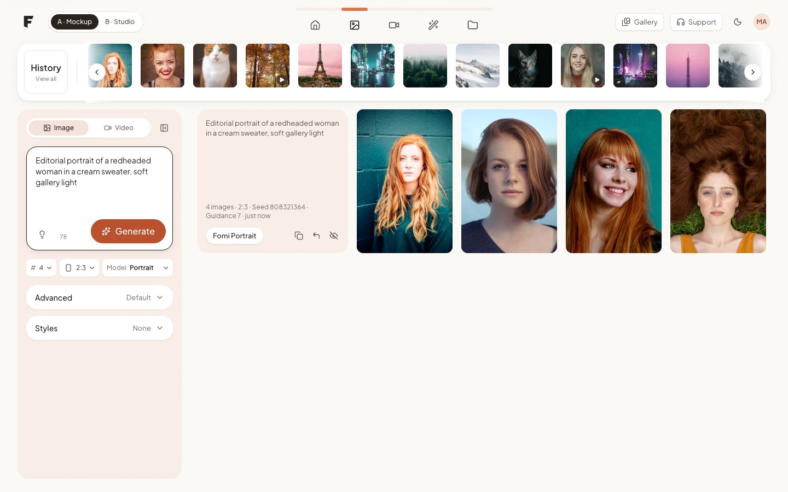
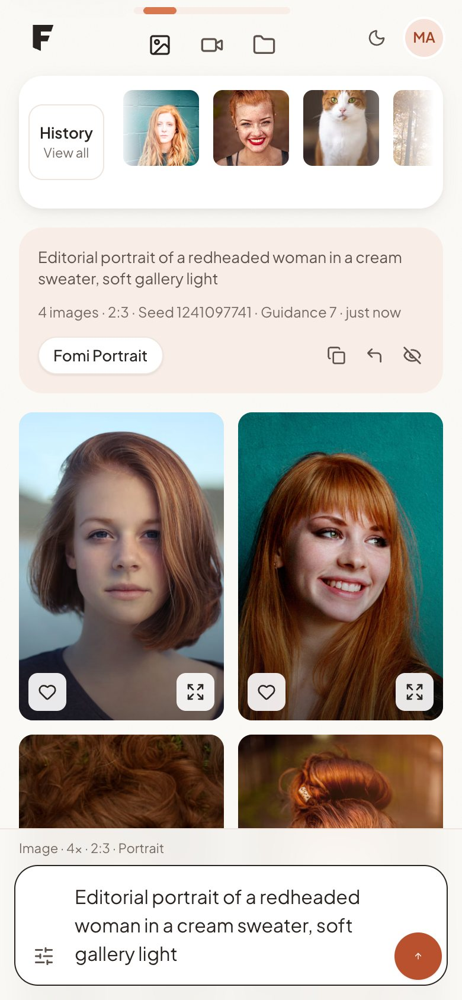
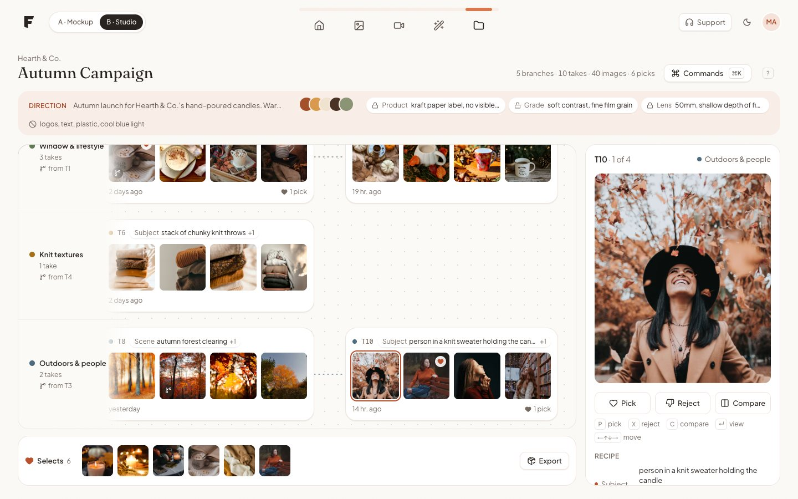
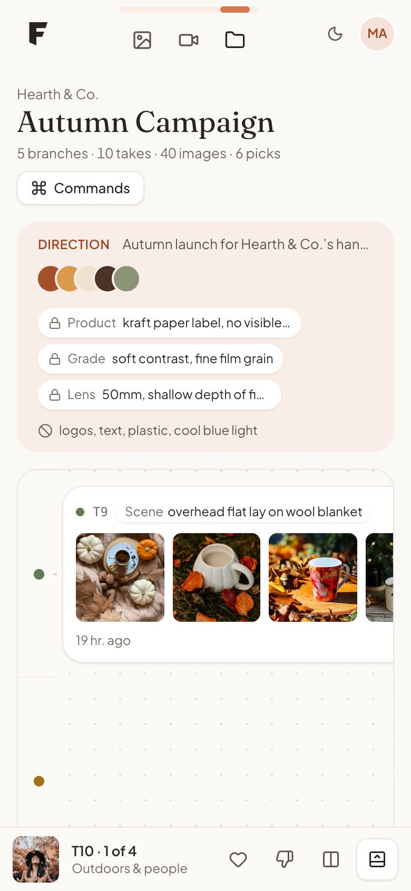

FOMI · Frontend assessment
{{role}}
| {{email}} | |
| Phone | {{phone}} |
| Part A — mockup | {{liveUrl}} |
| Part B — Studio | {{studioUrl}} |
| GitHub | {{repoUrl}} |
Part A: the mockup page, built to work on all screen sizes and with the keyboard. Part B: my own idea for the image workspace. You branch from any image by changing one thing, and every image keeps track of where it came from.



